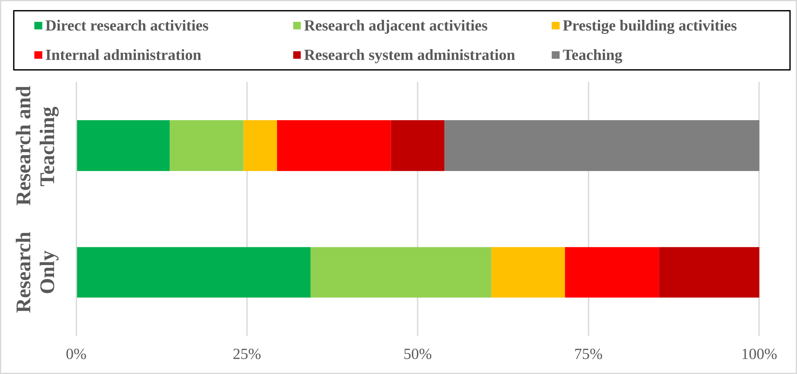
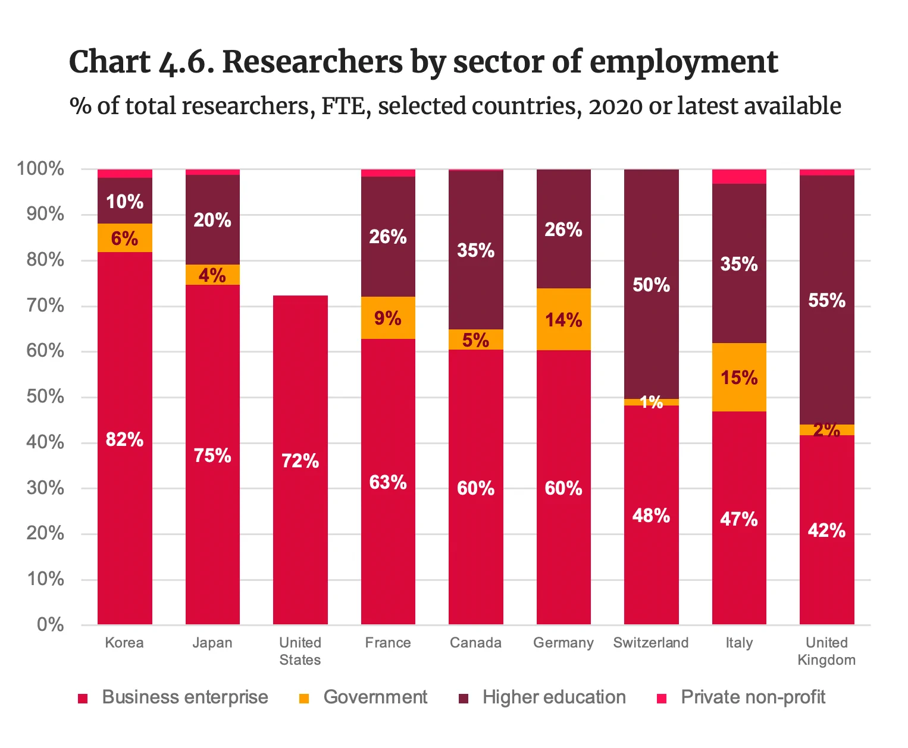

A New Model Research System
Leo Szilard, nuclear physicist, prophetic satirist
In 1948, Leo Szilard, a Hungarian-born physicist wrote "The Mark Gable Foundation"[1]. In this sci-fi short story, an industrialist is determined to halt scientific progress. The narrator proposes a vehicle to achieve this goal, not an autocratic state, or a mass un-literacy programme, but a grant foundation. It would utilise committees of scientists to review grant proposals, giving funding to the most promising applicants and large prizes to the best papers annually. This is intended to pull the best talent out of research into administration, reward scientists who follow trends, and push scientists towards certain, incremental work. Szilard reaches forward from the annals of history and skewers a key plank of the scientific ecosystem of today.
This story will be bittersweet to any scientist currently navigating the reality of modern academia, especially any with their career mostly in front of them. Grant funding drives modern funding, disbursing resources directly, and guiding larger systematic funding, like the UK's quality-related (QR) research funding. Remarkably, Szilard's satirical predictions have effectively been proven true, with UK research academics spending only 35% of their time directly on research activities[2], and schemes explicitly targeting funding "high risk/high reward" science selecting against novelty and discouraging it in the future[3]. Academics focus on research which helps them establish a track record of publications, otherwise they risk falling off to the funding treadmill which supports their career, and their lives, and so truly radical ideas outside the current consensus are neglected[4]. As a cherry on top, all of this relies on publicly funded researchers investing time on applications, review by publicly funded researchers, all administered by publicly funded institutions, burning public money at every stage.

From Universities and Colleges Union, via the Independent review of research bureaucracy, categories aggregated for clarity
So, peer review is costly, blunts the ambition of our scientists, and contributes to some of science's worst dynamics. What is the alternative? Plenty of interventions have been suggested to improve the peer review process[5], but rarely do these represent a major divergence from current processes. Potentially, the answer lies not in reform of peer review, but in bypassing it entirely.
Alternative structures for science
Research environments where scientists are not dependent on grants exist, on an institutional level. From the Max Planck Society in Germany, The National Laboratory system in the US, and National Centre for Scientific Research in France, research institutes provide settings in which researchers have the stability and capacity to focus.. These environments enable less precarity, where scientists have permanent roles, and don't have to worry about bringing home the bacon but inventing the next best thing.

From Cambridge Industrial Innovation Group, Science and Engineering Workforce
The lack of these structures is a UK specific issue, as an international outlier in the homogeneity of its research system. 55% of UK researchers work in higher education institutions, far more than other advanced economies, and just 2% of researchers work in government research organisations, ranking us as one of the lowest[6]. It's not surprising UK academics feel the greatest downstream distortions of the grant funding model, spending the least time on research, and the most on administration when compared to international peers[7].
These alternative structures are not without critique. Being directly government controlled and directed; they are more beholden to governmental influence. That can help focus science on societal prioritisations but can also lead to nuclear weapons and anthrax. Fundamentally, they also move the prioritisation of research within a closed system, with less transparency or range. But their inclusion in a research system provides some structural diversity and affords advantages, and the UK is unique in our rejection of them[8].
Alternative models of funding
Whilst other research systems do have more research institutes, grant funded research is still the predominant model of publicly funded research across the globe. There are credits to peer review, and to the competitive grants. If there is a consensus on a topic's potential, it should probably get researched at some point. But would other potential systems provide avenues to accessing areas of potential that the current system biases against? The US's Defence Advanced Research Projects Agency (DARPA) provides a model on finding high potential, low consensus ideas, and funding where it otherwise would languish. DARPA played a role in creating the internet, GPS, voice assistants, and even mRNA vaccines. In fact, the initial paper behind mRNA vaccines which was rejected from the academic journal Nature on the grounds of being "not novel", and "not of interest to the broad readership" and struggled to attract conventional funding but were a vital breakthrough to combating the COVID-19 pandemic, and saved millions of lives.
Moreover, the success of the DARPA model has inspired more iterations, both in the use with ARPA-E, and ARPA-H, as well as in the UK, with ARIA, but the scale of funding, in both value and quantity typically limits the systemic effects. ARIA was outlined to disburse £400 million of funding across five years, at its outset, which sounds like a lot, but compared to UKRI's annual £9 billion is relatively small. The research system is only minorly perturbed globally, despite an impressive local wake. Part of the DARPA/ARIA model is swapping the assessment of the scientific value of an idea from a panel of peers to a single director, driven by a programmatic goal.
With the large-scale dissatisfaction, both within and without science, and the billions of funding allocated via grant funding (directly or indirectly), a more experimental approach to metascience might deliver, especially if considering funding models which might sit alongside or augment traditional grant funding models.
An experiment in funding models
What might a more radical model look like? Instead of forcing researchers to craft grant applications, leets use formats that researchers already produce to disseminate their research. We could take inspiration from the world of professional sports, or the world of venture capital, both domains where identifying high potential prospects requires making risky bets and have a more proactive funding model where funders employ "research scouts", who would go to conferences (undeclared, importantly) and consume academic output directly. Scouts would be able to interact directly with researchers on a candid and casual basis, where researchers are often more open and honest about their ideas and its potential, and passion and vision are easier to spot. Based on these interactions, scouts could inform a breakthrough strategy based on both funding genuinely uncertain prospects, outside the scientific consensus, and backing extraordinary talent. This would differ from the ARIA/DARPA model by not being programmatic i.e. not in the service of one specific scientific aim, but rather aiming to diversify the baseline of scientific talent and enable new routes to support anti-consensus science.
A model like this would inevitably come with its own distortionary effects and weaknesses. However, academia current reliance on a dominant funding model has its own effects and weaknesses, which currently shape the entire research universe, but are taken as inevitable laws of physics, as supposed to a design choice that has been made, or rather has come to reign. This model of funding already exists, with the example of DARPA/ARIA already covered, in addition to functionally being how commercial research sponsorship works, just with a different aligned target.
The specific weaknesses and strengths of any funding model, and their relative importances, would likely be governed by implementation, but do present an opportunity to consider the system we currently exist in. The key question is whether our research system would be better served, either be an entirely new model or different structures, or as is more likely, by a less homogenous structure and funding model, utilising a range of structures and models to their respective advantages. Scientists have long been dissatisfied with our current model, refusing to innovate in the very way we innovate would be a bizarre self-imposed condition.
The iron is particularly hot in the UK, with a growing interest in metascience, with new players from a dedicated government metascience policy unit, a radical funding agency in both topic and format, and many other private actors, pushing models of scientific funding and structuring. A conversation is now happening not just around the need to do science, but also to do it in the best way possible[9]. This is the time to consider radical changes and to make Leo Szilard proud.
Footnotes
-
Szilard aimed at satirising the National Science Foundation of the United States of America, which was in the process of being established, to read, see: https://www.gipsa-lab.grenoble-inp.fr/~pierre.comon/FichiersPdf/theMarkGableFoundation.pdf ↑
-
Based on a Universities and Colleges Union survey of 18,000 academics, 2016, "Workload is an education issue". For plotting, the categories have been combined, for clarity as follows: Research activities including reading, self-directed and study design is presented as Direct research activities. Supervision of postgrad students, and staff, and writing papers and reports is presented as Research adjacent activities. External meetings, communications, and conferences, and networking is presented as Prestige building activities. Departmental and general admin, internal QA, departmental meetings and communications, and performance measurement (own) is presented as internal administration. Grant writing, peer review, REF activities and funder engagement is presented as Research System administration. Teaching activities are summed into one activity, Teaching. ↑
-
High risk/ high reward ERC grants were found to select against novelty and dissuade it in the future, as in: Veugelers et al., 2025, doi.org/ 10.1080/10438599.2025.2486344 ↑
-
A review of NIH grants found reviewers focusing on applicants backgrounds and reviewing applications negatively, as in: Van den Besselaar et al., 2018, doi.org/10.1007/s11192-018-2848-x ↑
-
The UK government reviewed interventions in use currently, and covers everything from the tiniest process tweaks (listing assessment criteria split into essential and desirable, as an example), to the more provocative (Wildcard reviewers, as an example here) see Review of Peer Review, UKRI, 2023, https://www.ukri.org/publications/review-of-peer-review/ ↑
-
Based on analysis by Cambridge Industrial Innovation Group, advanced economies being the G7 with Korea and Switzerland, 2022, https://www.ciip.group.cam.ac.uk/innovation/science-and-engineering-workforce-3/ ↑
-
UK academics spend 16.5 hours a week on research, least of English speaking or western nations, and spend 10.6 hours a week on administration, the most of any country surveyed. From OECD report: The state of academic careers in OECD countries ↑
-
Only the Swiss have fewer, because their top two research universities, ETH Zurich and EPFL (world leading research institutions) are classed as universities but actually operate more as a hybrid model between university and research institute. ↑
-
Momentum grew following an independent review of the UK research landscape, after which the Metascience unit began funding large-scale experiments. Proposals such as the Tony Blair Institute's Lovelace Labs concept reflect growing think-tank interest in the space. ↑